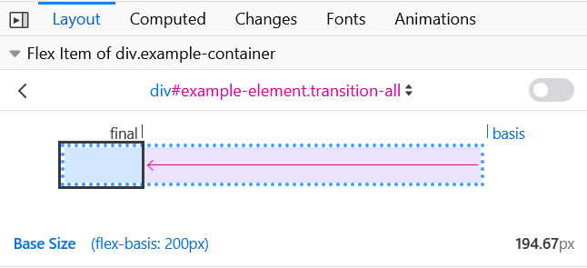

The flex-basis CSS property sets the initial main size of a flex item. It sets the size of the content box unless otherwise set with {{Cssxref("box-sizing")}}.
In this example the {{cssxref("flex-grow")}} and {{cssxref("flex-shrink")}} properties are both set to 1 on all three items, indicating that the flex item can grow and shrink from the initial flex-basis.
The demo then changes the flex-basis on the first item. It will then grow and shrink from that flex-basis. This means that, for example, when the flex-basis of the first item is 200px, it will start out at 200px but then shrink to fit the space available with the other items being at least min-content sized.
The image below shows how the Firefox Flexbox Inspector helps you understand the size items become.

Note: in case both flex-basis (other than auto) and width (or height in case of flex-direction: column) are set for an element, flex-basis has priority.
/* Specify <'width'> */ flex-basis: 10em; flex-basis: 3px; flex-basis: auto; /* Intrinsic sizing keywords */ flex-basis: fill; flex-basis: max-content; flex-basis: min-content; flex-basis: fit-content; /* Automatically size based on the flex item’s content */ flex-basis: content; /* Global values */ flex-basis: inherit; flex-basis: initial; flex-basis: revert; flex-basis: unset;
The flex-basis property is specified as either the keyword content or a <'width'>.
<'width'>auto. Negative values are invalid. Defaults to auto.contentIndicates automatic sizing, based on the flex item’s content.
Note: This value was not present in the initial release of Flexible Box Layout, and thus some older implementations will not support it. The equivalent effect can be had by using auto together with a main size (width or height) of auto.
flex-basis:auto meant "look at my width or height property".flex-basis:auto was changed to mean automatic sizing, and "main-size" was introduced as the "look at my width or height property" keyword. It was implemented in {{bug("1032922")}}.auto once again means "look at my width or height property"; and a new content keyword is being introduced to trigger automatic sizing. ({{bug("1105111")}} covers adding that keyword).{{cssinfo}}
<ul class="container"> <li class="flex flex1">1: flex-basis test</li> <li class="flex flex2">2: flex-basis test</li> <li class="flex flex3">3: flex-basis test</li> <li class="flex flex4">4: flex-basis test</li> <li class="flex flex5">5: flex-basis test</li> </ul> <ul class="container"> <li class="flex flex6">6: flex-basis test</li> </ul>
.container {
font-family: arial, sans-serif;
margin: 0;
padding: 0;
list-style-type: none;
display: flex;
flex-wrap: wrap;
}
.flex {
background: #6AB6D8;
padding: 10px;
margin-bottom: 50px;
border: 3px solid #2E86BB;
color: white;
font-size: 14px;
text-align: center;
position: relative;
}
.flex:after {
position: absolute;
z-index: 1;
left: 0;
top: 100%;
margin-top: 10px;
width: 100%;
color: #333;
font-size: 12px;
}
.flex1 {
flex-basis: auto;
}
.flex1:after {
content: 'auto';
}
.flex2 {
flex-basis: max-content;
}
.flex2:after {
content: 'max-content';
}
.flex3 {
flex-basis: min-content;
}
.flex3:after {
content: 'min-content';
}
.flex4 {
flex-basis: fit-content;
}
.flex4:after {
content: 'fit-content';
}
.flex5 {
flex-basis: content;
}
.flex5:after {
content: 'content';
}
.flex6 {
flex-basis: fill;
}
.flex6:after {
content: 'fill';
}
{{EmbedLiveSample('Setting_flex_item_initial_sizes', '', '360')}}
{{Compat}}